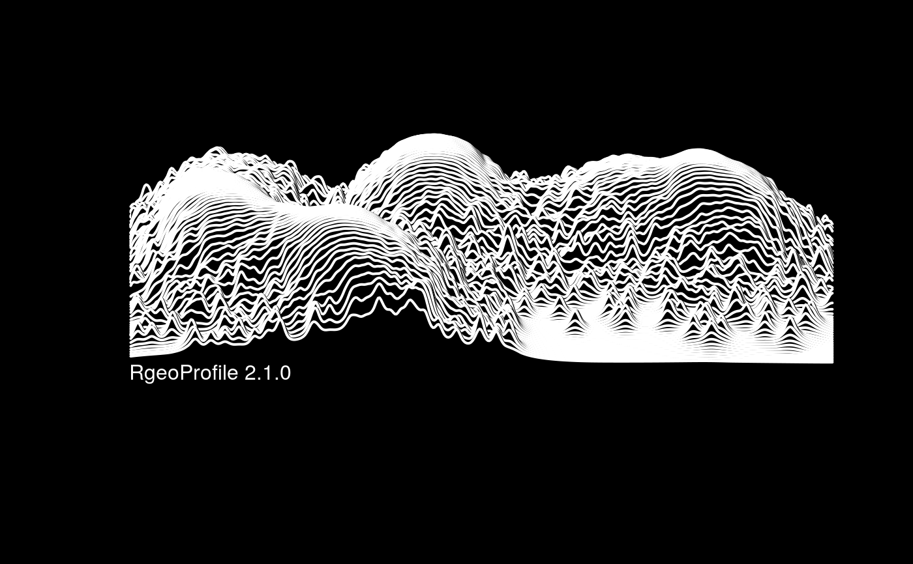

RgeoProfile.RdCarries out a DPM mixture model of geographic profiling (and associated functions) as described in Verity et al. (2014) For links to papers see http:/www.sbcs.qmul.ac.uk/staff/stevenlecomber.html or contact Steven Le Comber (s.c.lecomber@qmul.ac.uk). Created and maintained by Bob Verity (r.verity@imperial.ac.uk).
RgeoProfile: Dirichlet Process Mixture (DPM) model of geographic profiling
Carries out a DPM mixture model of geographic profiling (and associated functions) as described in Verity et al. (2014) For links to papers see http:/www.sbcs.qmul.ac.uk/staff/stevenlecomber.html or contact Steven Le Comber (s.c.lecomber@qmul.ac.uk). Created and maintained by Bob Verity (r.verity@imperial.ac.uk).
# \donttest{ # full example of Rgeoprofile 2.1.0 workflow, illustrating all functions # for details, see help for individual functions #------------------------------------------------------------------ # data and settings #------------------------------------------------------------------ # example data d <- LondonExample_crimes s <- LondonExample_sources # convert d and s to correct format for geoParams() # (note that in this case the example data are already in the correct # format; these steps are only relevant if for example d and s are # imported as two-column matrices. They are included here for # completeness) d <- geoData(d$longitude, d$latitude) s <- geoDataSource(s$longitude, s$latitude) # set model and MCMC parameters p = geoParams(data = d, sigma_mean = 1, sigma_squared_shape = 2, chains = 5, burnin = 1e3, samples = 1e4)#> Using sigma_mean and sigma_squared_shape to define prior on sigma#------------------------------------------------------------------ # run model #------------------------------------------------------------------ # run MCMC m = geoMCMC(data = d, params = p)#> data file passed all checks #> params file passed all checks #> #> Initiating burn-in phase (5 chains) #> iteration: 100 #> convergence at the GR=1.1 level reached within 100 iterations #> iteration: 200 #> iteration: 300 #> iteration: 400 #> iteration: 500 #> iteration: 600 #> iteration: 700 #> iteration: 800 #> iteration: 900 #> iteration: 1000 #> final GR statistic: GR=1.00324 #> #> Initiating sampling phase #> iteration: 1000 #> iteration: 2000 #> iteration: 3000 #> iteration: 4000 #> iteration: 5000 #> iteration: 6000 #> iteration: 7000 #> iteration: 8000 #> iteration: 9000 #> iteration: 10000 #> #> MCMC completed in 0.992 seconds #> Smoothing posterior surface............................. #> maximum likelihood lambda = 0.069#------------------------------------------------------------------ # output #------------------------------------------------------------------ # plot prior and posterior of sigma geoPlotSigma(params = p, mcmc = m)#> params file passed all checks #> data file passed all checks #> using zoom=12 #> downloading map#> Error: Google now requires an API key. #> See ?register_google for details.mapGP#> Error in eval(expr, envir, enclos): object 'mapGP' not found#> latitude longitude hs #> 1 51.5252 -0.0418 0.1156 #> 2 51.5012 -0.1421 1.2908 #> 3 51.5175 -0.1731 4.3052 #> 4 51.5321 -0.1238 2.3436Gini#> G_sources #> 0.97# zoom zoomLon = c(-0.1, -0.01) zoomLat = c(51.51, 51.54) mapZoom <- geoPlotMap(lonLimits = zoomLon, latLimits = zoomLat, params = p, data = d, source = s, surface = m$geoProfile)#> params file passed all checks #> data file passed all checks #> using zoom=12 #> downloading map#> Error: Google now requires an API key. #> See ?register_google for details.mapZoom#> Error in eval(expr, envir, enclos): object 'mapZoom' not found# produce perspective plots # probabilities geoPersp(surface = m$posteriorSurface, aggregate_size = 3, surface_type = "prob")# find centroids of data split by best grouping (placeholder for more thorough method) ms <- geoModelSources(mcmc = m, data = d) ms#> $longitude #> 1 2 3 5 #> -0.03983748 -0.14466651 -0.11555298 -0.18306789 #> #> $latitude #> 1 2 3 5 #> 51.52633 51.50410 51.53351 51.51804 #># add peaks to map # NB requires ggplot2 library(ggplot2) mapSource <- mapGP + geom_point(aes(ms$longitude,ms$latitude), size=6, pch = 3, col="red")#> Error in eval(expr, envir, enclos): object 'mapGP' not foundmapSource#> Error in eval(expr, envir, enclos): object 'mapSource' not found# plot surface in style of 'unknown pleasures', for fun unknownPleasures(m$geoProfile, paper_ref = "RgeoProfile 2.1.0")#------------------------------------------------------------------ # compare to alternative ring search strategy #------------------------------------------------------------------ # compare to geoprofile based on ring search strategy surface_ring <- geoRing(params = p, data = d, source = s, mcmc = m) gp_ring <- geoProfile(surface = surface_ring) # map of ring search geoprofile mapRing <- geoPlotMap(params = p, data = d, source = s, surface = gp_ring, surfaceCols <- c("red", "white"))#> params file passed all checks #> data file passed all checks #> using zoom=12 #> downloading map#> Error: Google now requires an API key. #> See ?register_google for details.mapRing#> Error in eval(expr, envir, enclos): object 'mapRing' not found# hitscores of ring search geoprofile hs_ring <- geoReportHitscores(params = p, source = s, surface = gp_ring) hs_ring#> latitude longitude hs #> 1 51.5252 -0.0418 3.8832 #> 2 51.5012 -0.1421 8.4788 #> 3 51.5175 -0.1731 33.9140 #> 4 51.5321 -0.1238 27.6544#------------------------------------------------------------------ # incorporate GIS data #------------------------------------------------------------------ # read in north London shapefile as mask and adjust surface north_london_mask <- geoShapefile() # restrict mask to Tower Hamlets TH_mask <- north_london_mask[which(north_london_mask$NAME == "Tower Hamlets"),] prob_masked <- geoMask(probSurface = m$posteriorSurface, params = p, mask = TH_mask, operation = "outside", scaleValue = 1e-9) gp_masked <- geoProfile(prob_masked$prob) # plot new surface mapMask <- geoPlotMap(params = p, data = d, source = s, surface = gp_masked, breakPercent = seq(0,25,l = 11))#> params file passed all checks #> data file passed all checks #> using zoom=12 #> downloading map#> Error: Google now requires an API key. #> See ?register_google for details.mapMask#> Error in eval(expr, envir, enclos): object 'mapMask' not found# hs of masked surface hs_mask <- geoReportHitscores(params = p, source = s, surface = gp_masked) hs_mask#> latitude longitude hs #> 1 51.5252 -0.0418 0.1156 #> 2 51.5012 -0.1421 23.4988 #> 3 51.5175 -0.1731 25.9900 #> 4 51.5321 -0.1238 24.3552#------------------------------------------------------------------ # }